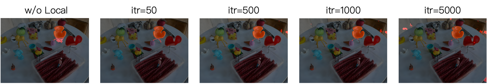

Abstract
Humans effortlessly describe and interact with the 3D world using natural language. Bridging this capability to artificial intelligence (AI) remains a significant challenge, particularly due to the under-specified and context-dependent nature of human instructions. In this paper, we introduce REALM, a novel framework that enables large vision-language models (LVLMs) to perform 3D reasoning and interaction. Built upon 3D Gaussian Splatting (3DGS), REALM lifts image-level reasoning to 3D space by combining a LVLM-based Visual Segmenter (LVSeg) with a hierarchical Global-to-Local Grouping (GLGroup) strategy. LVSeg leverages the semantic priors of LVLMs to generate reasoning-aware 2D masks, which are then propagated and refined in 3D via GLGroup. This design enables REALM to reason about spatial relationships, resolve ambiguous descriptions, and understand contextual cues across views. Furthermore, REALM supports a range of 3D interaction tasks, including object removal, replacement, and style transfer. Extensive experiments demonstrate that REALM significantly outperforms current methods on a variety of datasets, showcasing the potential of LVLMs in understanding complex 3D scenes.
3D Reasoning Segmentation Results

Visualization of the 3D reasoning segmentation results of our method REALM and previous methods. When faced with implicit instructions, REALM accurately identifies the target 3D objects.
Ablation Study on Local Refinement Steps

The local refinement is designed to improve the quality of the output. It refines the complete 3D object mask in just 50 steps.